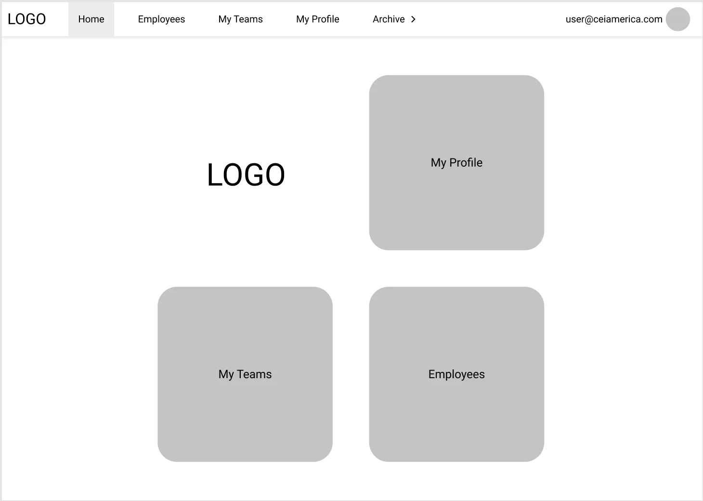
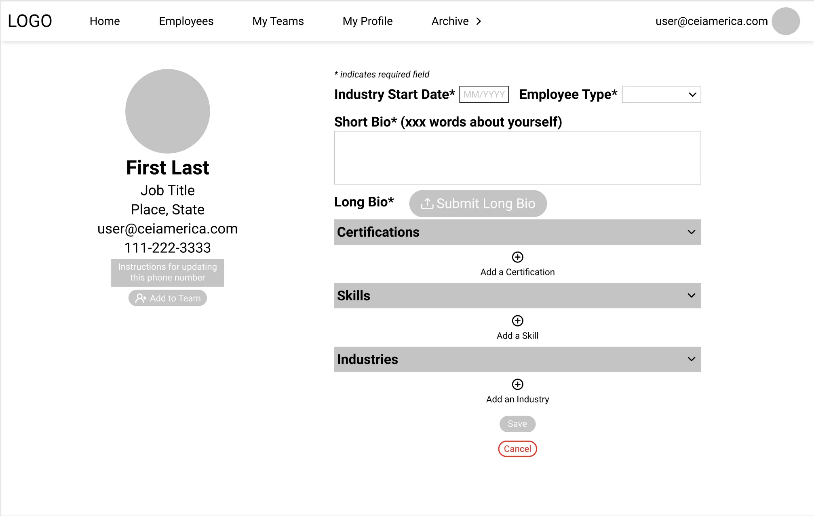
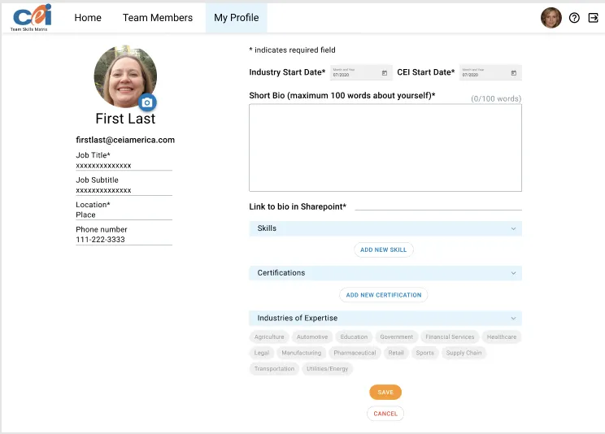
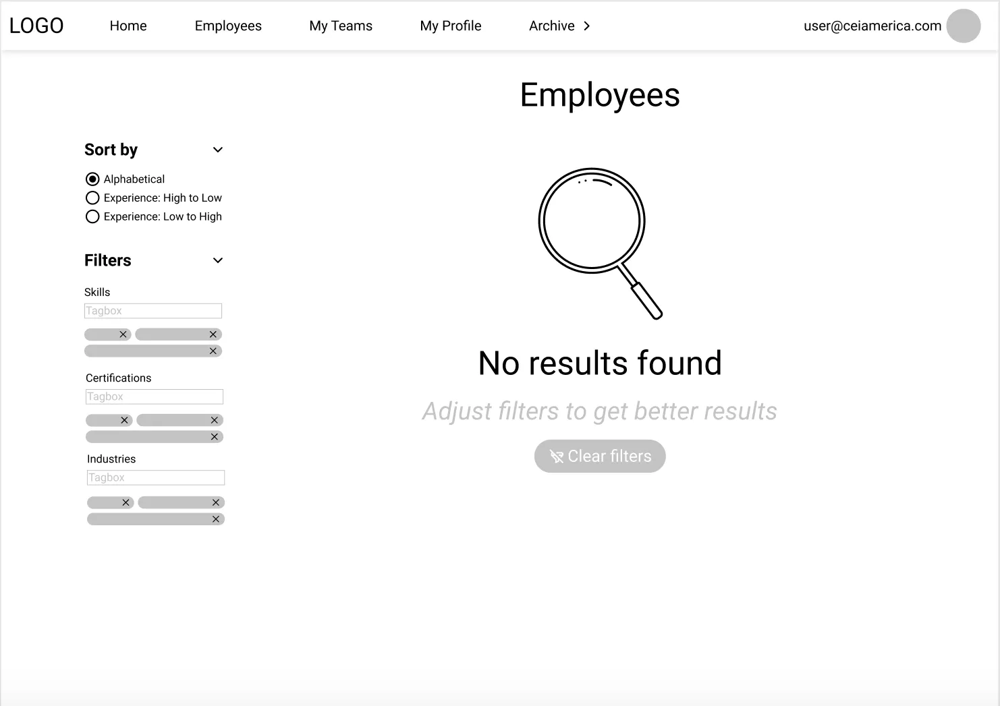
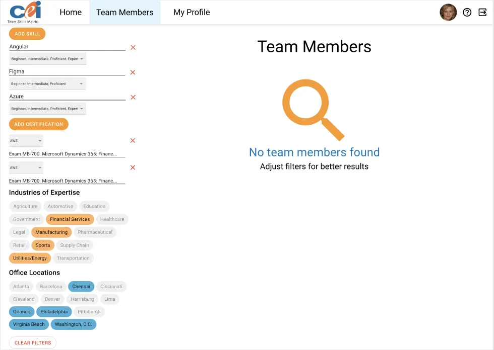
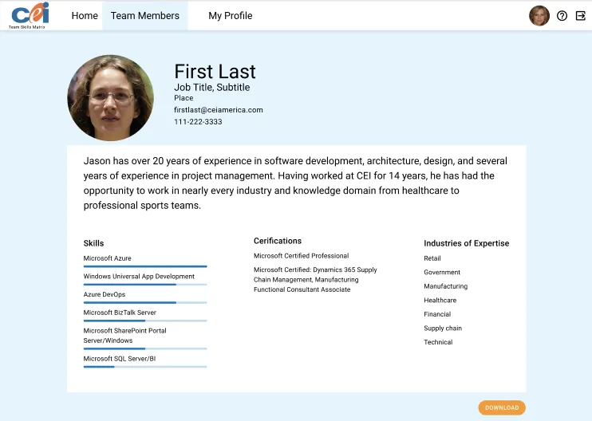

CEI Internship
I worked on a project called the Team Skills Matrix during my remote internship at Computer Enterprises, Inc. (CEI) during the summer of 2020. The aim of the project was to create an application that allowed employees to make profiles and filter an employee directory by skill, certification, location, etc. I did UX along with an intern with a digital design background and development with an intern with a computer science background.
Tools/Skills Used
- • Angular
- • TypeScript
- • SCSS
- • HTML
- • Angular Material
- • Bootstrap
- • SQL Server Management Studio
- • Figma
- • Adobe XD
- • Azure DevOps/Repos
- • UX Strategies and Best Practices
- • Full-stack Development (but mostly front-end)
- • Problem Solving
- • Iterative Development
Decision-Making Factors
- • Requirements from boss as a stakeholder (this was an internal project)
- • Working alongside interns and employees with different backgrounds/specialties
Challenges
- • Remote work amidst pandemic
- • Short timeline
- • Stakeholder's lack of availability for meeting
- • Being new to UX
Personas
- • Admin User (being onboarded or returning)
- • Regular User (being onboarded or returning)
- • Sales Team User (being onboarded or returning)
Prototype
|

|

|
|

|

|

|

|
|

|

|
|

|
Though the project wasn’t completed by the time I left, I learned and grew so much. It was my first time really using version control software or working on a software project of such a scale, and I had never even heard of Angular or TypeScript when I started. By the end of my time at CEI, I felt confident in these technologies, and I would love to get the chance to use them again.
If I could go back or work on this more, I would add some of the features we had to cut for the MVP, spend more time talking to our stakeholder, and spend less time trying to perfect parts of early iterations that ended up being changed later.
In addition to working on this project, I completed several PluralSight courses during my time at CEI. Read more about them here.